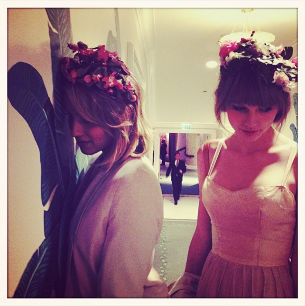
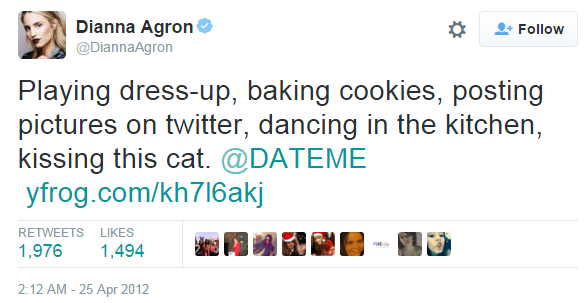

二. 隐秘恋歌 Secret Love Song
经历过RED时代的霉粉应该都知道Dianna Agron，< 22 >的隐藏信息是4个朋友的名字：Ashley Dianna Claire Selena。
当时就有人感叹，比起同样写进歌里认识多年的好朋友Selena Gomez，Dianna Agron和TS认识才短短数月，真是进展神速。
不过在RED中，TS为DA写的歌并不止这一首。
（再次提示，遇到不认识的人名或简称请看出场人物简介）
1. We Began Our Story in L.A.
虽然TS和DA一个是歌手一个是演员，但同处娱乐圈，各种颁奖礼、庆典、晚宴、聚会总是有共同出席的时候。
不过她们第一次在非工作场合面对面相遇是在2011年9月4号。
TS在Speak Now巡演间隙的休息日和Ashley还有Charity Baroni一起逛Fairfax Flea Market，DA和她弟弟Jason Agron也在逛这个旧货市场，然后两拨人就相遇了，Ashley是TS和DA的共同好友，在她的引荐下两人正式认识，相处十分愉快。当天DA在推特上关注了TS。
{kind=link}
{kind=link}
{kind=link}
{kind=link}
之后TS继续Speak Now巡演，直到2011年11月22号。接下来进入录音季，开始四专RED的集中录制，2011年12月13号22岁生日那天TS在INS上发了一张图，"Studio/birthday/new album/red shoes"，现在回头再看这个INS，她已经在做预告：新专辑是RED。
{kind=link}
2012年2月27号TS从LA飞澳洲，3月2号开始Speak Now澳洲巡演，直到3月18号结束，3月19号回到LA。
TS和DA第一次有记录的私下聚会是3月21号，F4（以后Taylor Dianna Ashley Claire四个人同时出现时我都简称F4了）在TS家度过一个dress-up night，Claire在INS上发了她和TS的合影，Ashley在评论中说"I'm such a good photographer"，也就是照片是她拍的，她在场。至于DA，她没有露面也没有说话。那怎么知道她参加了这个dress-up night？从这张照片看，Claire看着Ashley的镜头，而TS的目光在另一个方向，这个房间里有第4个人。DA白天和Ashley在一起，晚上Ashley去了TS家，第2天TS在推特上先后关注了Claire和DA，所以当晚DA也在，但是她没露面。
{kind=link}
{kind=link}
先记下这个时间，3月21号是她们第一次有记录的交集，3月22号推特关注。后面会讲到，TS和DA最晚在2月已经是best friend了，为什么到了3月底才出现她们见面的记录以及TS现在才在推上关注，这是第一个悬念。
3月25号，TS和DA两个人先在Unami Burger Restaurant吃中饭，下午去电影院看< 饥饿游戏 >，被路人撞见合影，图1，图2。第2天，DA在推特上说了自己看饥饿游戏，但只字未提TS。
{kind=link}
{kind=link}
{kind=link}
3月27号，Glamour以"Taylor Swift and Dianna Agron have a Hunger Games movie date"进行报道。
{kind=link}
3月28号，DA在推特上列了一份激励她的朋友名单和一些让她快乐的事，"Inspired by lovelies not afraid to make lists or be happy: @GeorgieEisdell, @paintyhands, @ashavignone @taylorswift13"，这个名单中有TS。
{kind=link}
{kind=link}
3月29号，DA在推特上推荐了一个视频，Queen乐队的< I Want to Break Free >，可以自己去看下这MV，gay爆了，顺便说一句，最受欧美基/姬喜爱的歌曲中这首歌是榜上有名的。
{kind=link}
3月30号，TS和DA和Mama Swift在LA的Il Pastaio餐厅吃饭，DA没有和TS一起坐车离开没有被拍到。
{kind=link}
3月31号，TS带着Claire参加KCA，一直和Selena、Katy Perry坐在一起，结束后没有参加after party，而是去DA家参加Jessica Szohr（DA的多年好友）的生日party，当天在场的其他友人发推惊讶表示竟然看到了TS。
{kind=link}
（3月21、25、30、31,短短10天里TS和DA在一起4次，只有3月25看电影被路人拍到合影，其余时间都无合影，DA只在3月28号推特上提过一次TS，TS完全没有提及DA，十分低调。还有个细节，3月31号TS既然要去DA家参加party，她头一天没必要还和DA一起吃饭吧，这是太粘腻还是为了一起见Mama Swift？）
4月初的剧情前一章已经说过
（重复的图片链接我选择性的贴，其他的可以翻看前一章）
4月1号，TS带着Ashley去LV参加ACM，并一直在LV待到4号。
4月1-4号，1D都待在LA，5号-8号在NY。
4月5号，镜报报道JB说某个大明星觉得HS很hot，媒体和粉丝纷纷脑补这个大明星是TS，还编出他们一起在JB家参加游泳池party的故事，实际上这几天TS和HS压根就不在同一个城市。
4月7号，TS出现在NY，被人目击和DA、Emma Stone，应该还有Ashley，一起在Otto餐厅吃饭，图1，图2。
{kind=link}
{kind=link}
4月8号，1D粉在Bowery酒店门口目击TS和DA在酒店里聊天说笑"#spotted Taylor Swift chilling with Dianna Agron… I don't know what to do with myself"，并且要到了与TS的合影，但是她们最想等到的1D始终没有出现过。不止1D粉，JB粉也在Bowery酒店目击到了TS和DA在一起。
{kind=link}
{kind=link}
{kind=link}
4月9号，DA在NY参加The View节目，那几天她都住在Bowery酒店（DA一般去NY都爱住Bowery），参加完节目，10号最晚11号就回LA了。霉粉都不懂这几天TS去NY是干什么的，没准她只是单纯想陪朋友呢，这不，DA一回LA，TS也回了Nashville。
{kind=link}
{kind=link}
4月11号，TS在INS发图说自己正在录新歌，图1，图2，当时粉丝也议论，她之前不是已经为新专辑写了25首歌了吗，大机器也说TS为新专写的歌已经足够好了，怎么还在写？
{kind=link}
{kind=link}
（11年12月13号TS就预告过下专是RED，3月份之前的录音季应该也录了足够的歌，到4月还在写，那这些就是她认为必须加进RED中的内容。）
4月12号，DA参加Jimmy Kimmel秀（4分48秒开始），被问到3月份开始传的TS、DA、Tim Tebow的三角恋，这一段非常有趣
Jimmy: You were in some sort of "love triangle" involving Tim Tebow and Taylor Swift
Dianna: It's crazy, everything is really weird
Jimmy: That's true?
Dianna: Yeah…… No!
接着DA说因为Tim Tebow最近签约了WME（经纪公司），她也是WME的，一起参加了WME的活动，他们聊天10分钟而已。然后DA开玩笑说“我有男朋友了，虽然已经没了联系”，这里她指的是Sebastian Stan，11年底就分手，12年2月14一起出现在街上被狗仔全方位的拍到照片，然后再无联系。（很突兀，基本就是PR）
Jimmy接着问
Jimmy: And how does Taylor Swift work into this "love triangle"?
Dianna: I don't know
Jimmy: Are you dating her?
Dianna: No!
Jimmy: That would be great
Dianna: Wouldn't that be juicy?
Dianna: Hi, Taylor (blow a kiss)
Dianna: We are friends, we are friends
Jimmy: But I like it to be more than friends
Dianna: Just friends
（这段神奇的Taylor Swift Dianna Agron Tim Tebow三角恋是怎么传出来的，作为第二个悬念，与悬念一有直接关系）
4月11就回Nashville写歌的TS继续留在那直到23号才出现在LA街头，但是4月14、15号她出现在一个朋友抱着孩子的合影中，这个朋友是住LA的，她可能这2天低调的回过LA，接着又去了Nashville。（DA也是住LA的，并且14、15号就待在LA）
4月23号凌晨2点，TS发推说："Sitting in my kitchen. Listening to music. Don't want to go to bed. Was in the studio tonight. Writing tomorrow. Should go to bed. Ok I will". 她还在继续写歌录歌。4月23号白天她回到LA，和Ashley逛街。
{kind=link}
4月24号白天，TS逛VS(Victoria's Secret)，买了一大袋内衣，图1、图2、图3、图4、图5、图6、图7、图8。
{kind=link}
{kind=link}
{kind=link}
{kind=link}
{kind=link}
{kind=link}
{kind=link}
{kind=link}
4月24号晚，F4又玩了一次dress-up night，这次是以给Shirley MacLaine庆生的名义，但是Shirley MacLaine压根没出现，她们就是自己找了个名目自娱自乐。F4先在TS家玩dress-up，随后去the Polo Lounge吃饭，图1、图2、图3、图4。
{kind=link}
{kind=link}
{kind=link}
{kind=link}
这图拍得太棒了，必须表扬。
{kind=link}
4月25号凌晨2点，party结束后，DA在推上发了一段话：
{kind=link}
Playing dress-up, baking cookies, posting pictures on twitter, dancing in the kitchen, kissing this cat. @DATEME
图中是DA某天晚上在TS家亲Meredith，结合几天后TS在DA生日party上的小猫装扮，这个kissing this cat真让人遐想。DATE ME! 你还记得4月12号Jimmy才问过你："Are you dating her"吗……这句DATE ME算是回答吗？
{kind=link}
23号凌晨2点（就是前面TS在推上说自己又写歌了不想睡觉的同一时刻），DA曾在推上发过这个照片，当时写的是#DATEME，也许是tag太明显，删掉了，25号凌晨重新发了一条，用了@DATEME
凌晨2点，当party结束朋友散去后，DA是否正在kissing this cat呢
此处应该放BGM：Shakira – Underneath Your Clothes
When the friends are gone
When the party's over
We will still belong to each other
第2天就有很多媒体报道这次girls night
{kind=link}
4月25号，Charity Baroni、Selena、Ashley Cook（Selena的助理）在TS家聚会，据说有目击DA当天很晚去了TS家。
{kind=link}
4月26号，TS发INS说自己下午1pm才起床，为自己做了一份丰盛的早餐。
{kind=link}
4月27号，TS在家为几个朋友做饭，Dakotah Rae给了TS一条剪刀项链，而DA有一个剪刀手链。
{kind=link}
{kind=link}
{kind=link}
4月28号，DA提前在家办马戏团主题生日party（生日是30号），到场的有F4，DA的其他好友，还有Glee剧组的同事（当然Lea Michele是没去的）。TS穿成一只性感小猫/老虎，脖子上系着项圈，项圈上还系着链子，图1，图2，有当天在场的人在29号凌晨发推说TS为DA唱了2首歌。
{kind=link}
{kind=link}
{kind=link}
来庆生的朋友们在DA的留言门上留言，TS写的是
{kind=link}
"I'm a little cat and I need to nurse because I'm a runt and I'm likely to fall victim to predators."
“我是小猫咪，我需要哺育/我要吃奶，不然我就会变得虚弱被强大的捕食者干掉。”
在这段话下有人写了个大大的WTF？！也觉得无法直视吧
第2天一早TS出门去DA最喜欢的Huckleberry Bakery & Cafe买吃的，从街拍的图上清楚的看到她脖子上、肩膀上、背上有明显的红色勒痕，看来昨晚小猫/老虎被人好好nurse过了……再看看这图，抖M得没眼看……
{kind=link}
（之后有霉粉翻出一张Emma Stone拿着皮鞭躺在一个玩具虎身上的图来调侃TS：老虎、皮鞭、Emma Stone，TS的另一个BFF，看来这就是TS和她女性朋友们的相处方式 >_< ）
{kind=link}
很多DA的朋友或Glee的同事在TS发的庆生推下面留言，表达了类似于这样的意思：
{kind=link}
@taylorswift13 great to finally meet you!
这句话让我想起了Shawn Mendes（1989的开场嘉宾）在15年8月31号VMA见到Karlie Kloss后说的一句话：
{kind=link}
"Karlie Kloss walked by me and I nearly dropped dead"
这两句用通俗的话表达就是：小弟久闻大嫂大名，今日得见，大嫂果然风姿绰约，名不虚传啊！
TS惊艳亮相DA的生日party，媒体少不了又是一轮报道，还要顺上前一次她们打着给Shirley MacLaine庆生名义的dress-up night，链接一，链接二。
4月30号，DA生日正当晚有一个小范围低调的庆生聚会，Claire在INS上发图祝贺。F4其他3人都没有在网上露面，TS当天在LA并无其他活动，按照F4一起行动的模式，如果Claire去了，TS和Ashley一定也在。
{kind=link}
THE REST OF THE WORLD WAS BLACK AND WHITE
BUT WE WERE IN SCREAMING COLOR